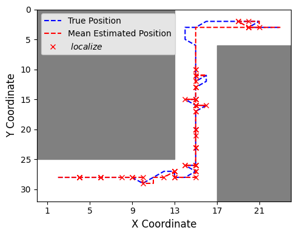

We evaluate our method across different environments and noise conditions. The qualitative trajectory figure illustrates adaptive localization in risk-prone regions. The bar charts compare localization counts and success rates, where our algorithm outperforms baselines while maintaining constraint satisfaction. The transition, observation, and risk experiments show robustness and adaptation, confirmed by the heatmaps showing concentrated localization in critical areas.

The figure shows how the robot adapts its localization in a noisy and uncertain environment with transition noise (80%, 10%, 10%), observation noise (68%, 4%), and a 40% risk threshold. The robot localizes more often in the Start Area and Middle Tunnel, where the risk of failure is higher. It localizes less in safer, open areas and does so again near the goal for accurate positioning. This behavior shows how the robot balances safety and efficiency under challenging conditions.
We compared all algorithms based on localization counts and success rates. RiskRL achieved strong generalization, significantly outperforming other planners in the more challenging chesapeake and st_thomas environments, with nearly double the success rates while keeping localization counts low. BASE used fewer localizations but still achieved competitive success rates. While CC-POMCP performed reasonably, it was much slower—taking 20 seconds per action compared to just 20 milliseconds for RiskRL and BASE.
We further analyze the robustness of RiskRL across noise levels and risk constraints. The top two rows show that localization frequency increases with higher transition noise, yet the success rate remains stable—demonstrating RiskRL's adaptability. Observation noise has little impact on either metric, indicating resilience to sensing uncertainty. Finally, varying the risk constraint reveals a trade-off: tighter constraints yield more localizations and fewer failures, while lenient ones allow for fewer localizations at the cost of success rate.

This figure shows the probability of localizing based on the agent’s estimated location. The yellow block denotes the start position, and the green block denotes the goal position. Note for the chesapeake and st thomas environments, we only show a smaller segment of the environment. We ran each algorithm on each environment with a predefined path 250 times.